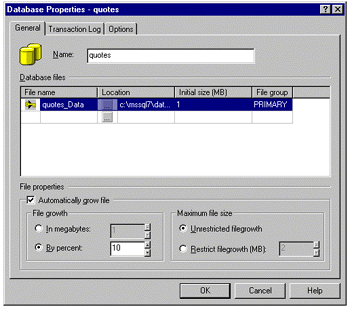

|
| ||
|
| ||
Tom Moran
Microsoft Corporation
November 23, 1998
The following article was originally published in the Site Builder Network Magazine "Servin' It Up" column (now MSDN Online Voices "Servin' It Up" column).
With Microsoft SQL Server 7.0  being released, I figured it was time to talk about it in this column. Up until a couple weeks ago, I hadn't really spent much time with the new version. My Web sites have been running along just fine using SQL 6.5, so claims that I could handle a bazillion or so transactions per second just didn't interest me. Neither did the fact that BAAN, SAP, and others built their applications using SQL 7.0. And is it really that important to my readers? After all, most of you reading this column seem to be doing things similar to what I do, so you've probably got some Web applications of medium complexity:
being released, I figured it was time to talk about it in this column. Up until a couple weeks ago, I hadn't really spent much time with the new version. My Web sites have been running along just fine using SQL 6.5, so claims that I could handle a bazillion or so transactions per second just didn't interest me. Neither did the fact that BAAN, SAP, and others built their applications using SQL 7.0. And is it really that important to my readers? After all, most of you reading this column seem to be doing things similar to what I do, so you've probably got some Web applications of medium complexity:
I wondered: Should you upgrade if you're not going after the data warehousing market and don't really know what OLAP means? What does SQL Server 7.0 mean to an average Web developer who isn't planning to store pictures of the entire earth's surface? Turns out, it means quite a bit. I'm not going to be able to talk about all of the new features of SQL Server 7.0 right here. For that, you'll want to go to the SQL Server Web site and download the Features Guide. I'll talk about the top features that I have been most impressed with - features that just make daily life easier.
and download the Features Guide. I'll talk about the top features that I have been most impressed with - features that just make daily life easier.
Seriously. The SQL Server 7.0 upgrade went really smoothly for me. An Upgrade Wizard guides you through most of the process, and you can choose between a single-computer upgrade and a two-computer upgrade. As you might expect, the single-computer process will upgrade everything directly on your computer. The two-computer process allows you to upgrade to a new computer, keeping the original computer entirely intact and unchanged. You can even keep both SQL Server 6.5 and SQL Server 7.0 on your machine, and switch between the two using the SQL Server Switch utility -- which is what I did. This is great for a test or dev environment, and switching between the two versions took me less than a minute. The only minor snag is that both versions can't run at the same time on the same machine, which would have been nice. Before you install SQL Server 7.0, please read the support white paper titled Installing Microsoft SQL Server 7.0 , by Dave McVie. He has also written a database conversion guide, Converting Databases to Microsoft SQL Server 7.0
, by Dave McVie. He has also written a database conversion guide, Converting Databases to Microsoft SQL Server 7.0 . Dave is one of our support engineers and knows all the problem areas you're likely to run into, so reading these can be invaluable in preventing potential problems or misunderstandings -- and you can enjoy the new features of SQL Server as quickly as possible.
. Dave is one of our support engineers and knows all the problem areas you're likely to run into, so reading these can be invaluable in preventing potential problems or misunderstandings -- and you can enjoy the new features of SQL Server as quickly as possible.
SQL Server 7.0 has 25+ new wizards to help guide you. The best one, in my opinion, is the index-tuning wizard. This thing will analyze real workload, figure out what kind of queries are run, then recommend and even implement indexing changes to take advantage of the expected queries. My sources in the SQL Server beta program cite this feature as being very effective. My second favorite wizard is the new web-assistant wizard. A key feature here is that you can place multiple queries on a single page.
To access most of the wizards, you just need to right-click on anything in the left pane of the SQL Enterprise Manager, select Tools, and then Wizards. The index-tuning and Web-assistant wizards are both in the Management category.
SQL Server 7.0 does a lot more things automatically -- from creating statistics to freeing resources to growing files. Remember sp_configure? Forget it. Well, almost.
There are some things that SQL Server won't do for you -- but for the most part, a new database created using the defaults will run as efficiently as possible without your intervention. If SQL Server needs more memory, based on the number of users and current workload, it will get it itself. It will also release it. If SQL Server needs more disk space, it will take care of that as well. It will even choose the appropriate locking strategy. All of this can come at a price, however. I know when I was in my heyday of C/C++ programming, I didn't like the compiler making too many decisions for me. Experienced database administrators may have the same problem. If you don't have an experienced database administrator on staff, or if your administrator would rather not spend time manually tuning every database, you'll be very pleased.
SQL Trace has been replaced by the Profiler, although the file is still sqltrace.exe. This works hand in hand with the index-tuning wizard I mentioned earlier. You use the Profiler to create a trace representing real workload, use that trace in the index-tuning wizard, and obtain recommendations on modifying your indexes for maximum performance. The Profiler also makes a great spy tool -- and because of its low overhead, it can be run all the time in most situations. Use it to capture query information for the Query Analyzer and find out which queries are not performing well. The Profiler is also one of your best troubleshooting tools. If you ever need to call support with an issue, be sure you have a trace that replicates the problem if possible.
Remember all the problems you've had with Windows NT authentication for databases existing on machines separate from your Web server? This and other associated authentication problems are starting to go away. SQL Server 7.0 integrates much more tightly with Windows NT security than have previous versions. In fact, you can grant database access to Windows NT groups directly. For example, to add myself, I might use the following code
To create the account in the database:
EXEC sp_grantdbaccess 'Microsoft/tommor', 'Tom'
To grant access for that account:
EXEC sp_grantlogin 'Microsoft/tommor'
Other integration features include allowing authentication to go through a proxy server. For more information on this, you'll need to look at the reviewer's guide.
SQL Server now supports the nvarchar, ntext, and nchar data types, offering direct support for Unicode characters. Instead of worrying about character conversions and code pages, you can now store data in multiple languages in a single database -- and it's relatively easy. For those of you who aren't familiar with Unicode, it's a double-byte character-coding system that enables you to store up to 65,536 character values -- helpful for storing languages with many characters, such as Chinese. Keep in mind, though, that a Unicode character takes up twice as much space. For example, as I note below, a varchar data type can now store up to 8,000 characters. However, an nvarchar data type will store only 4,000.
characters. Instead of worrying about character conversions and code pages, you can now store data in multiple languages in a single database -- and it's relatively easy. For those of you who aren't familiar with Unicode, it's a double-byte character-coding system that enables you to store up to 65,536 character values -- helpful for storing languages with many characters, such as Chinese. Keep in mind, though, that a Unicode character takes up twice as much space. For example, as I note below, a varchar data type can now store up to 8,000 characters. However, an nvarchar data type will store only 4,000.
I won't spend too much time on performance. You can read the specs and case studies for details. As I mentioned before, I generally don't care whether SQL Server can handle more transactions than the entire world generates. However, I do care that this same performance scales down -- and it seems to. The developers did a good job focusing on performance, and many customers using the beta version have noticed speed improvements of 50-100 percent, without re-authoring. I noticed that simply by upgrading, speed improved. Henry Lau provides an excellent SQL Server 7.0 performance tuning guide on MSDN Online. One major thing to note is that SQL Server 7.0 now supports dynamic row-level locking, which is important because the page size is four times as large as it used to be (a performance enhancement in itself). With row-level locking for all SQL Server requests, busy systems can avoid contention-related performance penalties.
SQL Server 7.0 even runs on Windows 95. This helps resolve many compatibility problems when dealing with remote or disconnected users. Troubleshooting is a little more difficult, because you lack many of the tools that come with Windows NT -- but all in all, it is the same code base and works great. You even get automatic merge replication for all those sales reps out in the field, so SQL Server will merge all their changes. You miss out on such things as guaranteed transactional integrity, but that isn't really what you're after in many mobile systems anyway. The self-management improvements really come into play as well -- since for the most part, you're not dealing with techies and you don't want someone's database needing alteration or tuning while they're on a plane between Seattle and Buffalo.
Variable-length character data types were 255 bytes long in SQL Server 6.5. In SQL Server 7.0, they are now 8,000 bytes. That's right -- 8,000. In the past, for anything that required more than 255 characters, people used the text data type. However, the text data type is sometimes problematic, a little slow, and not always appropriate for what you want to do. For example, it is now easier to quickly offer decent floating help, since you have more than 255 characters available.
This has to be my favorite. Even though you might consider it part of self-management, it is such a great feature that it should be called out separately. I can't count the number of times I've created a database, and then found out at a less-than-convenient time that it was too small. If you've done this in SQL Server 6.5, you know how painful it was to alter the size. If you haven't, trust me: It was a pain -- not really difficult, but cumbersome (especially if the application was sitting at a client's site). I'm sure more than one of you has received a 2:00 A.M. call with a down Web site situation that was due either to the log or to the database exceeding its limits. In fact, if you have a story, let me know. I'll send out a T-shirt for the best one. Check out the screen below for creating a new database:

In creating my new database, I simply stayed with the defaults, allowing SQL Server to automatically adjust my file size by 10 percent whenever needed. I did the same thing with the log. Now I don't have to worry about it -- at least until I run out of disk space.
Of course, now we get to the real problem of having a top-10 list. There are so many other great things that I can't go into: queries that can handle multiple databases from different vendors, better and faster backup and restore, support for multiple triggers (a hot button of mine in the past), ability to define pager schedules so the right person gets called, a GUI Query Analyzer, and so on. Overall, however, the most fundamental change I have seen is that you no longer have to be a SQL Server expert to use effectively use the program for many tasks. I wish I could go into more detail for you; to get more information on SQL Server 7.0, visit the SQL Server product site , which includes Steve Ballmer's Comdex presentation on SQL Server 7.0.
, which includes Steve Ballmer's Comdex presentation on SQL Server 7.0.
Until next month,
Tom Moran
Tom Moran is a program manager with Microsoft Developer Support and spends a lot of time hanging out with the MSDN Online Web Workshop folks.
Did you find this material useful? Gripes? Compliments? Suggestions for other articles? Write us!
© 1999 Microsoft Corporation. All rights reserved. Terms of use.